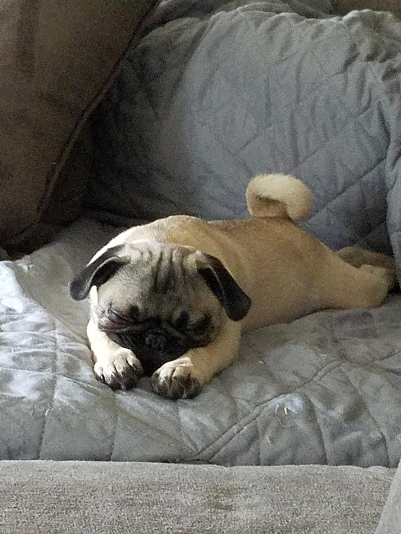
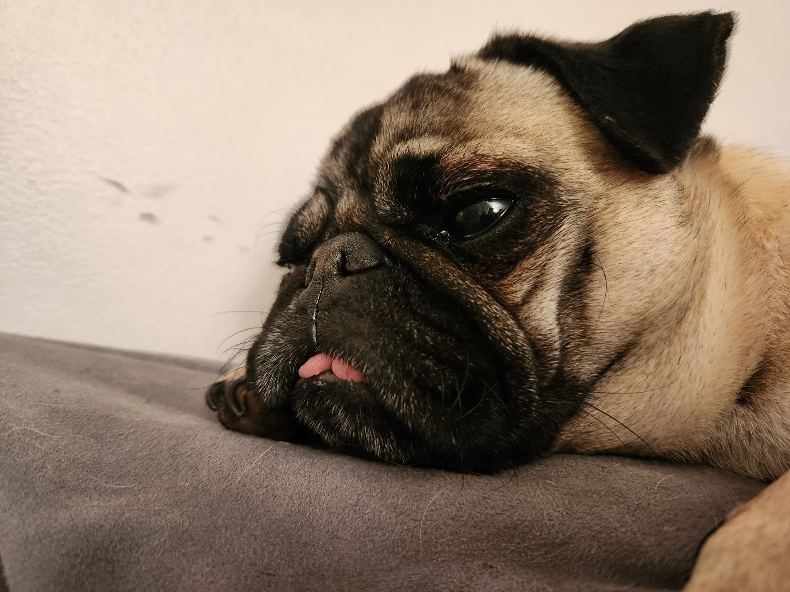
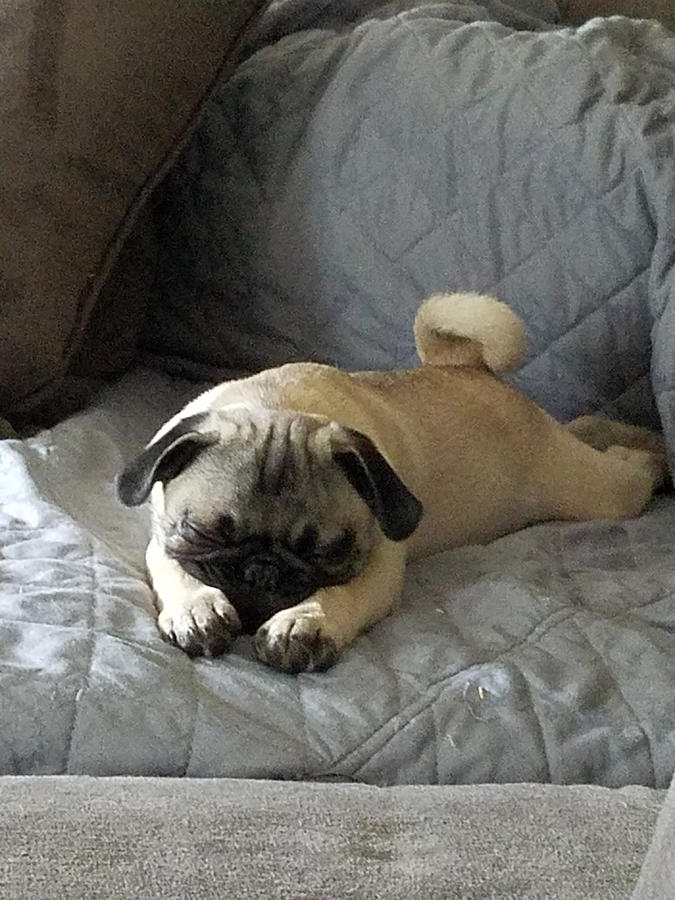
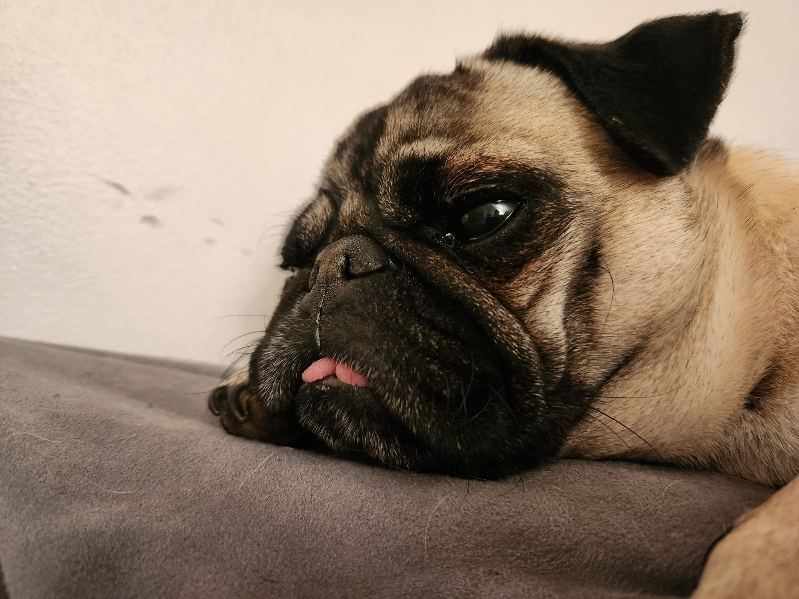

PETS
Bacon Q Dog

Bacon Q. Dog is a 9yr old labradoodle. He prefers to spend his days lounging among the three different beds/couches that his family has gifted him. He enjoys a walk or two around the neighborhood, as long as he can pretend that he doesn't see any of the other animals to avoid the embarrassment of not wanting to admit he has no wolf-like skills in chasing them.
At night just as the rest of the family is ready to relax, Bacon suddenly wants to release all of his energy. He will place his toys on a mini couch and frantically drag the couch around, giving his toys "a ride." There is also a lot of rolling. Lots and lots of rolling.
Photo Gallery


Likes
- Belly rubs
- Playing tug-of-war
- Sneaking onto the couch
Duckie
Duckie is a 6 month old golden retriever. He is very playful and loves to bark at the mailman.
After playing tug-of-war and digging holes in the backyard, he likes to take naps with the family.
Photo Gallery

Likes
- Chasing squirrells
- Running
- Barking at the mailman
Fitz

Loves chasings tennis balls, chipmunks, squirrels, and birds. Often found sitting by the fire in wintertime, and in sun patches when available. He’s energetic, mischievous, and easily bored. He loves people and gets grumpy if left without a lap too long.
Loves barking up trees, running around on the lawn, and digging in the dirt looking for moles. He especially likes getting treats and whines when he comes inside and doesn’t get a snack.
Photo Gallery


Likes
- Blankets
- Being warm
- Barking
Daisy

Enjoys exploring the backyard, especially on sunny days, and has a knack for discovering hidden treasures in the grass
Adores chasing after squeaky toys, sunbathing by the window, and snuggling up on cozy pillows. Daisy is a charming and affectionate pug with a penchant for finding the comfiest spots in the house. She has a playful spirit and loves engaging in amusing antics to keep everyone entertained.
Photo Gallery
 



Likes
- Naps
- Giving kisses
- Eating
Milo
Thrives on exploring the world with a keen sense of smell, Rusty is an adventurous dachshund always ready for a new scent trail. Whether burrowing into blankets or sunbathing by the window, Rusty is a charming companion with a spirited personality.
Enjoys short sprints around the yard, digging for hidden treasures, and playfully barking at passing cars. Rusty's loyalty and inquisitive nature make every day full of surprises and laughter.
Photo Gallery
Likes
- Short sprints
- Exploring
- Sniffing